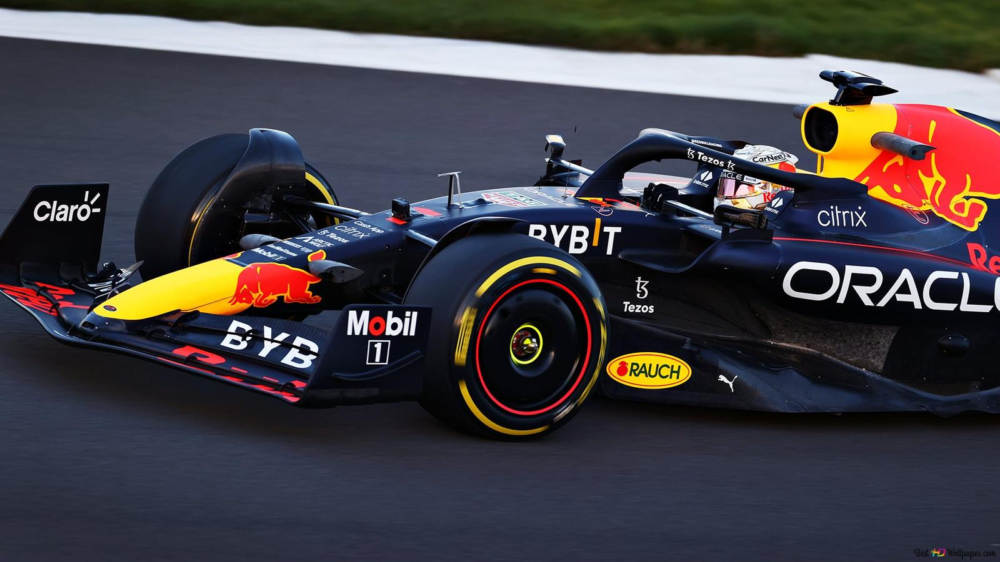

Max Emilian Verstappen (pronunciación en neerlandés: Hasselt, 30 de septiembre de 1997) es un piloto de automovilismo neerlandés nacido en Bélgica.[4] Ganó el Campeonato Mundial de Karting en 2013 y fue tercero del Campeonato Europeo de Fórmula 3 de la FIA en su debut en monoplazas. Desde 2015 compite en Fórmula 1, debutando en la escudería Toro Rosso.
Max Verstappen
Ver Mas..